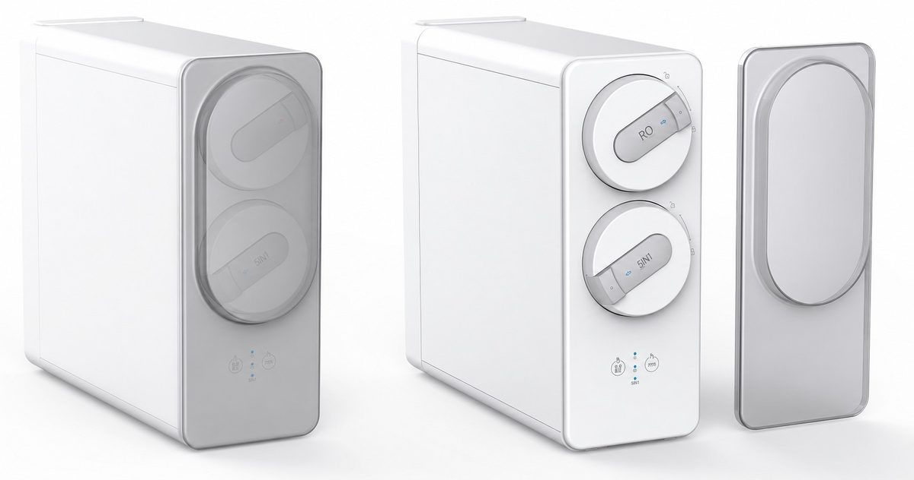
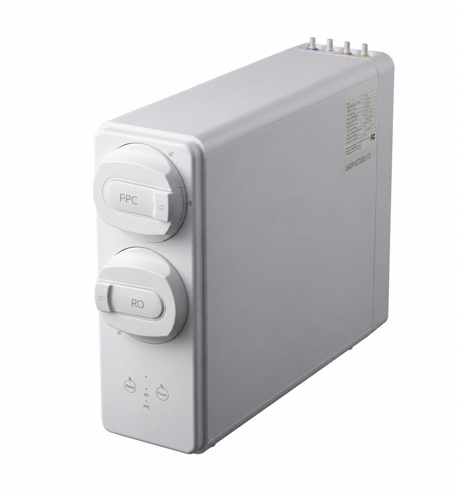

Under-Sink
Under-SinkWT-UR13
800 GPD under-sink RO purifier
Get a QuoteHome / Products / Under-Sink RO Systems / WT-UR14

Under-Sink RO Systems
Under-sink RO with storage heating
WT-UR14 — Under-sink RO with storage heating. Key specification: RO capacity 400–800 GPD. Specifications are confirmed per model and order.
Voltage / frequency is configurable to the target country. Other configurations are confirmed per order.
8 specification rows from the ROPureOEM catalogue.
| RO capacity | 400–800 GPD |
|---|---|
| Dimensions (L×W×H) | 340 × 220 × 385 mm |
| Hot-water tank | 2L |
| Tank heating power | 1200 W |
| Tank holding temperature | 75°C |
| 45°C water flow | ≥1.3 L/min |
| Voltage / frequency | Configurable to target country |
| Other configurations | Confirmed per order |
Specifications are taken from the ROPureOEM catalogue. Where a value is not yet confirmed, it is listed as “Confirmed per order” — we do not publish unconfirmed figures.
Under-Sink800 GPD under-sink RO purifier
Get a Quote
Under-SinkHigh-capacity front-access RO purifier
Get a Quote
Under-SinkCompact front-access RO purifier
Get a Quote Under-Sink
Under-SinkThree-cartridge RO purifier
Get a Quote